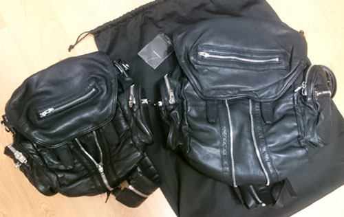
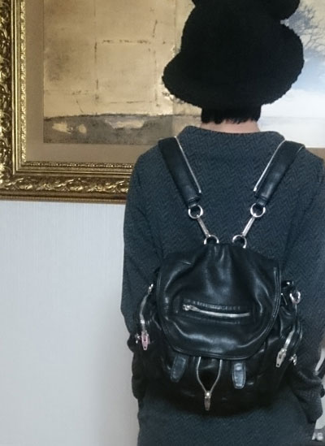
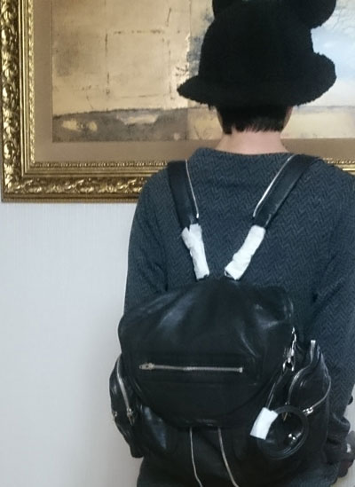
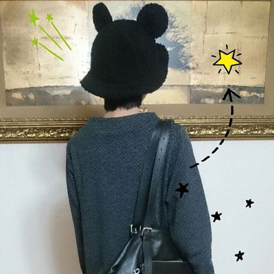
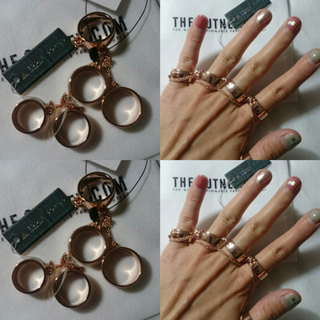

Alexander Wang Marti Backpack
알렉산더왕 마르티 백팩 왼쪽이 미니 / 오른쪽이 큰사이즈
작년 3월에 죠 미니 사이즈를 해롯에서 구입하고
큰사이즈가 느므 갖고싶었더랬죠;; ㅡㅡ;;;
들고다니는 내내 제길 큰거 살걸
귀엽다고 작은거 샀더니 후회되네 어쩌구 이러믄서 마구 투덜거리고 다니다가
(그도그럴것이 작년까지는 작고 네모네모한 가방에 엄청 집착하다가
이제는 또다시 빅백으로 돌아섰습니다 ㅡㅡ;; 취향참;; ㅋㅋ)
에이 모르겠다 우선 매장가서 큰사이즈 함 메어보기나 하쟈 싶어서 백화점 출동 ^^;;
생각보다 가격이 안비싸더라구요
한국들어오면 어마무지하게 비싸질줄 알았는데
이날 마침 백화점 브랜드 세일 10% + 백화점 카드 5% + 일정금액 이상 구입시
주는 상품권 5만원 차감 하니까 오히려 싼거임;;
헐;; 머지 이가격은 싶어서 홀린듯 집어왔는데 (이게 MM6 가방사고 정확히 일주일 뒤 ㅡㅡ;; 미쳤음;;)
집에와서 다시 메보니 결국은 저거 환불하고 미니사이즈로 정했습니다
거나하게 삽질한거임 ^^;;;
처음 미니사이즈의 불만은 스아실
미니사이즈는 앞 / 좌우 포켓이 그닥 구실을 못해요 넘 작아서;
핸드폰 큰사이즈는 들어가지도 않습니다
(동생곰에게 얻은 소니 z1 쓰는데 옆 포켓에 진짜 아슬아슬하게 들어갑니다 ㅡㅡ;;)
큰사이즈 메고 다니시는 분들 보믄 앞주머니에 책도 넣고 물건을 마구마구 넣어다녀도
수납공간이 넓은게 부러워서 큰걸 샀건만
우선 메어보니까 안예뻐요........OTL
내가생각했던 그런 모양이 아님 ㅜㅜ 그리고 확실히 느껴지는 무게;;
전에 누가 리뷰에 가방 자체 무게가 좀 있다는걸 보고 읭? 싶었는데
확실히 큰 사이즈는 촘 무겁습니다;;
몇번을 메어보구 엄마님께 의견도 물어봤지만
작은사이즈로 의견이 기울더라구요
ㅋㅋㅋㅋㅋㅋ 큰사이즈가 글케 갖고싶었는데
막상 사오니까 작은사이즈가 맘에드는 요상한 상황 ^^;;;;
결국 작은사이즈로 맘 정하고 큰건 고대로 환불했습니다
직원분들께 촘 죄송하군욤

요게 미니사이즈

요게 큰 사이즈
키도크고 덩치도 커서 너능 빅백을 메야한다라고 항상 말하시는 엄마님조차도
이번엔 작은게 이쁘다고 하심 ^^;;
근데 숄더로 메는건 확실히 큰사이즈가 멋있습니다
하지만 난 이걸 백팩으로 쓸려고 산거라 ^^;;;
우이되었든 거나하게 삽질하고 원래 있던거 쓰기로 결정한
그런 이야기 였습니당;;

이왕 사진찍은거 새로사온 가방 사이즈좀 보자 싶어서
이것저것 메고 찍어봤는데
엄마님이 날 죄다 빅두숏다리로 만들어 놓음 ㅡㅜ 미워 ㅜㅜ
이 사진에서 뽀인트는 내 곰돌이 모자 ㅋㅋㅋㅋㅋㅋ

+
요건 최근에 (내가 사달라고해서) 선물받은
Eddie Borgo
Five Fingers Ring
주위반응은 니가 18살이냐? 그걸로 나 때릴려고?(feat.동생곰) 파이터냐 등등
다양했습니다 ㅋㅋㅋ
왜?뭐?왜? ㅋㅋㅋㅋ